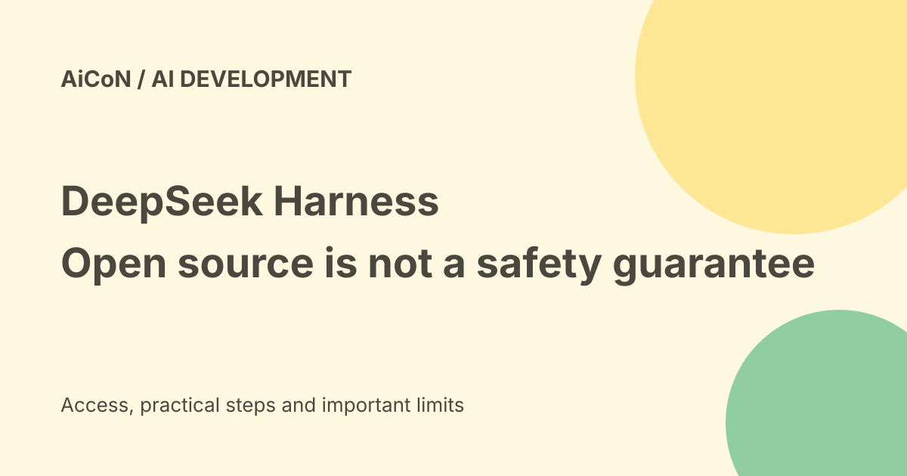

DeepSeek Harness: plugins, preview limits and safe testing
DeepSeek Harness is an open-source environment for building and running AI agents. Its tools and other capabilities are plugins. The source is available under the MIT licence, but the project explicitly says it is experimental, unaudited and not production-ready.

What is an agent harness?
A model produces an answer or a proposed action. A harness supplies the tools and working environment needed to carry out tasks.
DeepSeek Harness, also called dsh, can provide file editing, shell commands, search, planning and workflows. This gives the model real capabilities, not just a chat box. Those capabilities can also damage files if misused.
Everything is a plugin
The project uses Cordis's plugin system. Models, tools, skills, sessions, sandboxes, storage, loops, scheduling and the user interface are supplied through plugins.
Developers can replace or extend capabilities through configuration without changing the main project source. A plugin is code with access to its configured environment. Treat third-party plugins as software to review, not as harmless chat prompts.
The four runtime modes
Standard is the fuller coding-agent environment. Code mode lets the model combine multiple tool operations in a TypeScript program. TypeScript is a programming language based on JavaScript.
Minimal keeps a shell and file editor for benchmarking. Creator adds runtime inspection, plugin experiments and support for making custom presets. Minimal means fewer tools, not automatically low risk: a shell can still run powerful commands.
Source and licence
The official repository lists the MIT licence and separate third-party licence notices. Source availability lets a developer inspect and modify the software.
A permissive licence does not remove obligations attached to dependencies. It also supplies no security warranty. Review the exact version and notices before redistributing it.
Free software is not free inference
The public source and developer preview are available, but the checked pages do not promise free unlimited model use. Your chosen model provider, local hardware or cloud host can have separate costs.
For an Indian developer, inspect provider billing, rate limits, tax and currency conversion before connecting a paid account. A free harness does not make an API key free to use.
Current setup route
The repository describes installing Node.js and starting the local Web UI through its npm package. It also describes a source-checkout route using pnpm.
The default local Web UI is served at the loopback address on port 3080. A loopback address points to your own computer. Do not expose the interface publicly merely to make access convenient. Follow the current official instructions for the version you inspect.
The security warning is explicit
The project's safety notice says it has not undergone a security audit and must not be treated as secure or production-ready.
It can execute model-generated code and commands, load plugins and reach files, processes, network access and credentials made available to it. Incorrect output, malicious input or configuration errors can lead to modification, deletion or disclosure.
Sandbox limits
The official notice says sandboxing, approvals and permission controls reduce risk but do not guarantee isolation or prevent damage. Resources the project is allowed to access remain at risk.
Do not use the harness as the sole security control for untrusted work. Start with a disposable environment, minimum privileges, backups and no production credentials.
Session logs can hold private data
The project describes an append-only session log containing what the model sees and does. Resume, fork, search and replay use that event stream.
That helps inspect a run, but logs can contain file contents, tool results or other sensitive context. Check where logs are stored, who can read them and how to delete them before using private code or documents.
A cautious evaluation path
- Read the official repository and safety notice.
- Choose and record a specific version.
- Use a disposable virtual machine or dedicated environment.
- Copy only a small non-sensitive test project.
- Review plugins and model billing.
- Keep minimum permissions and approval checks.
- Inspect commands, changed files and logs.
- Run independent tests before accepting changes.
No installer, model, shell command or plugin was executed for this guide.
What changed since the original post?
We add the explicit unaudited status, licence and dependency distinction, separate inference costs and the sensitivity of session logs. The original free-and-open description should not be read as secure, production-ready or free unlimited execution.
Frequently asked questions
Is this only for DeepSeek models?
The architecture supplies models through plugins. Check the supported provider configuration for your version.
Does Minimal mode guarantee safety?
No. Its shell and editor can still affect allowed resources.
Was it tested here?
No. This is a source-based guide.
Sources: Official developer preview · Official repository and licence · Project safety notice · Current product overview. Checked 7 October 2026.